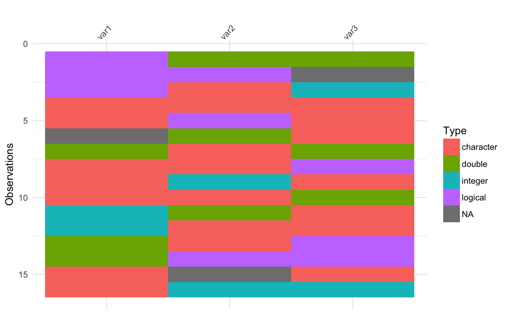

vis_guess visualises the class of every single individual cell in a
dataframe and displays it as ggplot object, similar to vis_dat. Cells
are coloured according to what class they are and whether the values are
missing. vis_guess estimates the class of individual elements using
readr::guess_parser. It may be currently slow on larger datasets.
vis_guess(x, palette = "default")
Arguments
| x | a data.frame |
|---|---|
| palette | character "default", "qual" or "cb_safe". "default" (the default) provides the stock ggplot scale for separating the colours. "qual" uses an experimental qualitative colour scheme for providing distinct colours for each Type. "cb_safe" is a set of colours that are appropriate for those with colourblindness. "qual" and "cb_safe" are drawn from http://colorbrewer2.org/. |
Value
ggplot2 object displaying the guess of the type of values in the
data frame and the position of any missing values.
See also
Examples
messy_vector <- c(TRUE, "TRUE", "T", "01/01/01", "01/01/2001", NA, NaN, "NA", "Na", "na", "10", 10, "10.1", 10.1, "abc", "$%TG") set.seed(1114) messy_df <- data.frame(var1 = messy_vector, var2 = sample(messy_vector), var3 = sample(messy_vector)) vis_guess(messy_df)